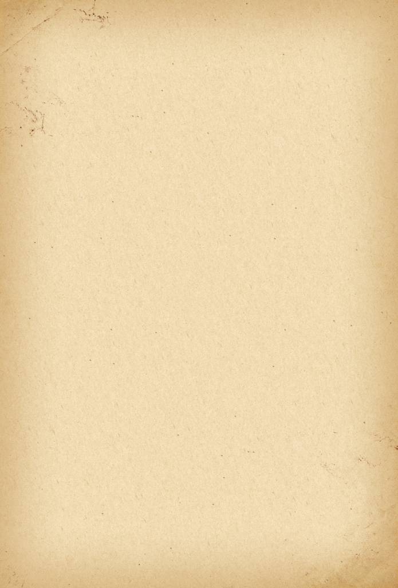

中国节气

小满(grain buds)是二十四节气之一，夏季的第二个节气。小满--其含义是夏熟作物的籽粒开始灌浆饱满，但还未成熟，只是小满，还未大满。每年5月20日到22日之间视太阳到达黄经60°时为小满。这时全国北方地区麦类等夏熟作物籽粒已开始饱满，但还没有成熟，约相当乳熟后期，所以叫小满。南方地区的农谚赋予小满以新的寓意:"小满不满，干断田坎";"小满不满，芒种不管"。把"满"用来形容雨水的盈缺，指出小满时田里如果蓄不满水，就可能造成田坎干裂，甚至芒种时也无法栽插水稻。
输入你最喜爱的节气
再输入一个吧